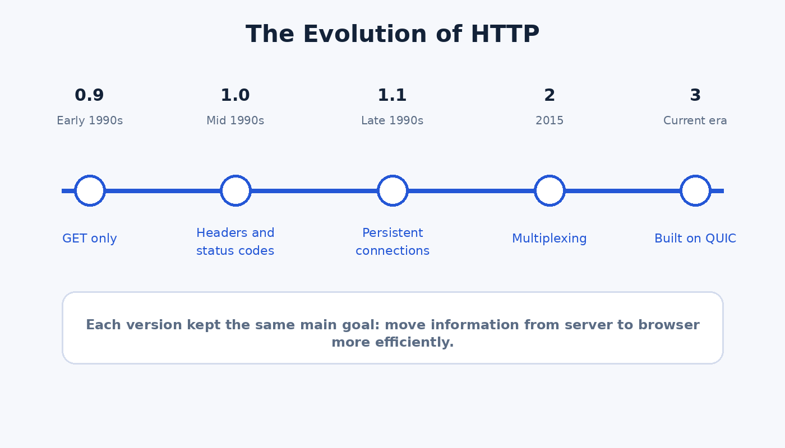

HTTP/0.9
This earliest version was extremely basic. It only supported the GET method and returned plain documents with very little extra information.
Intro to Web Development class project
Topic page 2
HTTP began as a very simple protocol, but it had to improve as websites became larger, faster, and more interactive. Each major version solved new performance and communication problems.

This earliest version was extremely basic. It only supported the GET method and returned plain documents with very little extra information.
This version added headers and status codes, which helped servers communicate more clearly. It still opened a new connection for each request.
Persistent connections were one of the biggest improvements in HTTP/1.1. A single connection could handle more than one request, which improved efficiency.
HTTP/2 introduced multiplexing and a binary format. This allowed multiple requests and responses to move at the same time over one connection.
HTTP/3 is built on QUIC and uses UDP instead of TCP. Its goal is to reduce latency and improve performance, especially on mobile or unstable networks.
| Version | Main Feature | Main Limitation or Reason for Change |
|---|---|---|
| HTTP/0.9 | Very simple document retrieval | No headers or detailed responses |
| HTTP/1.0 | Status codes and headers | Required a new connection for each request |
| HTTP/1.1 | Persistent connections and improved caching | Less efficient for very resource heavy modern pages |
| HTTP/2 | Multiplexing and binary framing | Still depended on TCP level behavior |
| HTTP/3 | QUIC transport and lower latency | Still being adopted across all systems |
Every major update to HTTP has the same goal: make web communication more efficient without changing the basic idea of a browser asking for content and a server sending it back. The history of HTTP shows how the web had to keep adapting as users expected more speed, more media, and more interactivity.